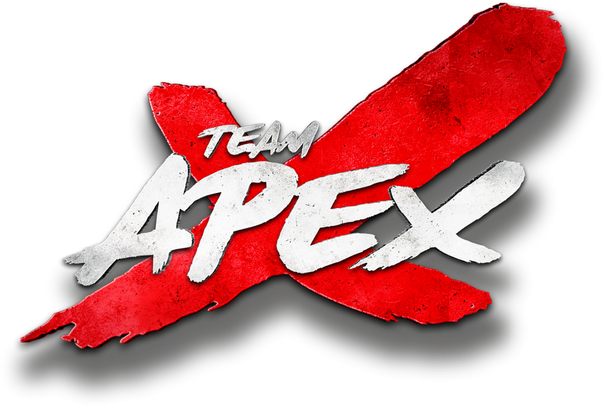

Everybody wants it
EASY
WRONG
MINDSET
caption I saw
···
It's
not
how
hard
you
work,
it's
about
how
little
you
can
do…
♡
💬
➤
WORTH IT
≠ EASY
PHYSICAL
MENTAL
DOUBT · DOUBT · DOUBT · DOUBT · DOUBT · DOUBT ·
DOUBT · DOUBT · DOUBT · DOUBT · DOUBT · DOUBT ·
DOUBT · DOUBT · DOUBT · DOUBT · DOUBT · DOUBT ·
DOUBT · DOUBT · DOUBT · DOUBT · DOUBT · DOUBT ·
HARD
CHALLENGE
NO SHORTCUTS
THE WORK
EVERY SESSION
TIME
CONSISTENCY
HARD WORK
Not for everybody
